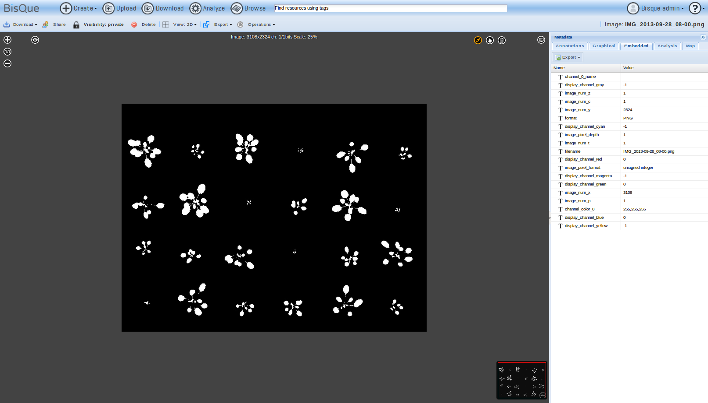
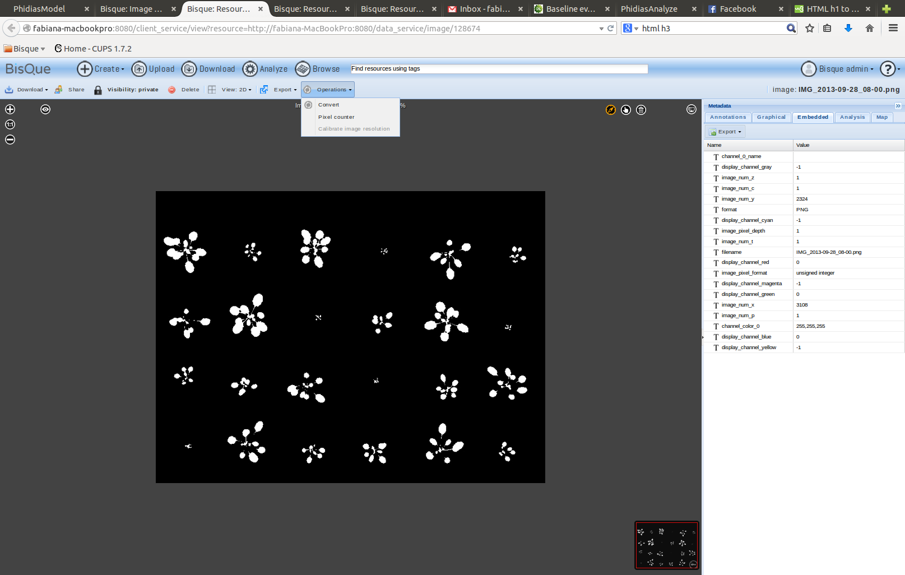
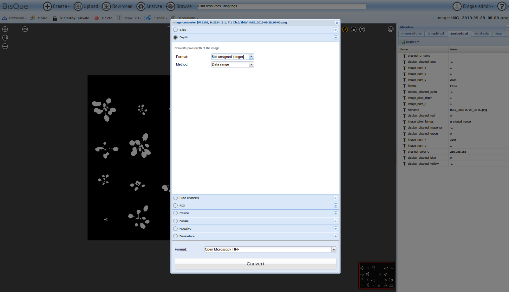
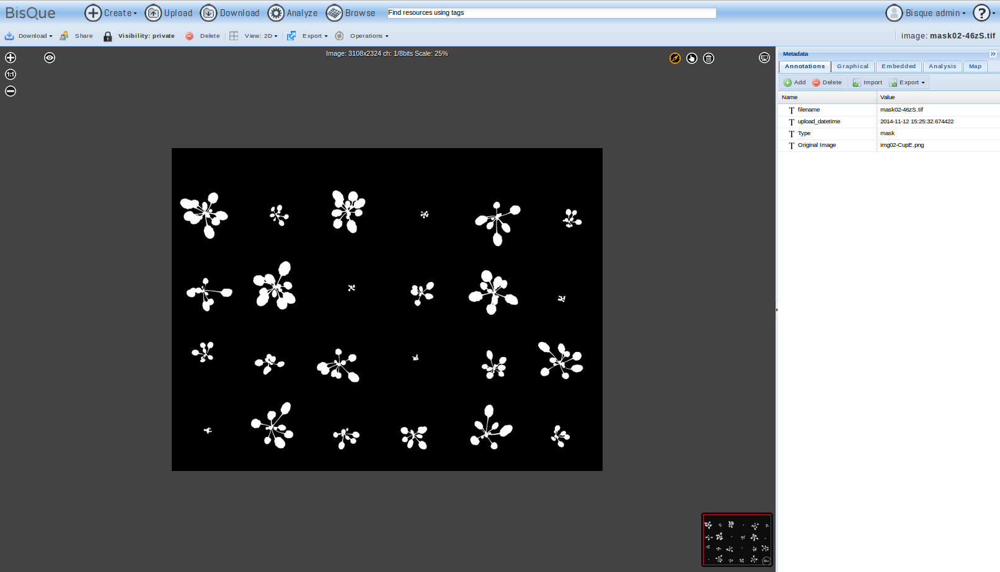

Description:
This module allows to run a grid search for finding the best set of parameters to be used as input for Phidias module.
License
By using this free and open source software you agree to reference this work and its authors in any products produced using it, including but not limited to scientific papers, posters, technical reports, presentations, leaflets, etc.
How to run the algorithm:
Select data for processing:
- Prepare Images for the Dataset:
- If your masks have been created by means of PhidiasAnnotate, you just have to select or create the dataset and execute the module. Otherwise, you should apply the following steps to let the algorithm work correctly:
- Upload your images and their corresponding masks on Bisque.
- Open your mask in the Bisque browser. You may need to convert your masks by using the Bisque converter tool. Select "embedded" in the metadata section on the right. Check if "image_pixe_depht" is equal to 8:

- Otherwise, select "operations" in the upper menu, then click on "convert":

- Select "depth". Set "Format" to "8bit unsigned integer" and "Method" to "Data range". Click on convert.

- After the conversion, you can save the new mask to your local machine and then upload it again on Bisque.
- Once checked the "image_pixel_depth", you have to add two different tags to your masks. Select "Annotations" in the metadata section on the right.
- Click on the "add" button. Add a tag "Original Image" and set its value to the filename of the original image the mask refers to. Add another tag "Type" and set its value to "mask". At the end, you should obtain something like this:

- Repeat previous steps for each mask in your dataset.
- Similarly, add a tag "Type" and set its value to "image" for each image in your dataset.
- Dataset Creation:
- You can now create the dataset by selecting the images you want to use. Please be sure to have a mask for each image in your dataset. If you have already created your dataset, you just need to select it among the ones available.
- Parameters:
- Run Algorithm:
- Click on the "Run" button to execute the grid search.
- Results:
- In this section you can visualize the results. You can now use the best set of parameters as input for Phidias module.